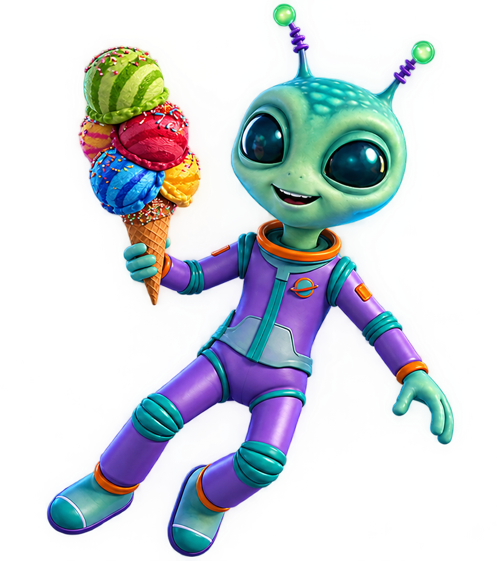

Pequeno por escolha
Preferimos jogos enxutos e bem-acabados a produções gigantes e inacabadas. Escala não é prioridade, experiência é.
A história, a missão e a forma como a Little Comet Studio dá vida aos seus jogos.
A Little Comet Studio nasceu de uma ideia simples: nem todo jogo precisa ser gigantesco para
deixar uma marca. Somos um estúdio indie. Começamos como um pequeno grupo de desenvolvedores
apaixonados por contar histórias curtas, cheias de personalidade, em mundos que cabem no bolso,
mas parecem enormes por dentro.
O nome vem justamente disso: um cometa é pequeno perto das estrelas, mas deixa um rastro que
todo mundo enxerga. É essa a marca que queremos deixar com cada jogo que lançamos.
Acreditamos em jogos independentes feitos com cuidado, curiosidade e um pouco de humor. Nosso objetivo não é competir em escala, e sim em identidade: criar experiências coloridas, imaginativas e memoráveis, que os jogadores lembrem muito depois de terminar.

Cada projeto da Little Comet Studio segue alguns princípios que guiam nossas decisões, do primeiro rascunho até o lançamento.
Preferimos jogos enxutos e bem-acabados a produções gigantes e inacabadas. Escala não é prioridade, experiência é.
Não nos prendemos a um único estilo. Já exploramos aventura, puzzle e plataforma — e pretendemos continuar experimentando.
Arte, trilha sonora e narrativa caminham juntas desde o início de cada projeto, assim cada jogo se torna único e reconhecível.
Preferimos lançar um jogo bem polido a lançar rápido. Cada título passa por várias rodadas de testes antes de chegar aos jogadores.
Conheça os jogos que nasceram dessa forma de pensar.
Explorar os jogosNesta fase, a Little Comet Studio evoluiu o site com uma navegação mais clara, breadcrumbs, páginas individuais para cada jogo e uma experiência demonstrativa de compra e download. Também reorganizamos as pastas do projeto e aprimoramos a responsividade e a apresentação visual.
Os jogos independentes permitem criar experiências autorais, menores e mais experimentais, com foco em identidade e proximidade com o público. Essa escolha também acompanha o crescimento do segmento indie, conforme os dados apresentados pela Mordor Intelligence.
O JavaScript passou a controlar dados dos jogos, páginas de detalhes, validações, preços e classificações. A proposta para a próxima evolução é incluir um chatbot de dúvidas sobre a empresa, o site e os produtos, sem acesso a informações privadas ou financeiras.